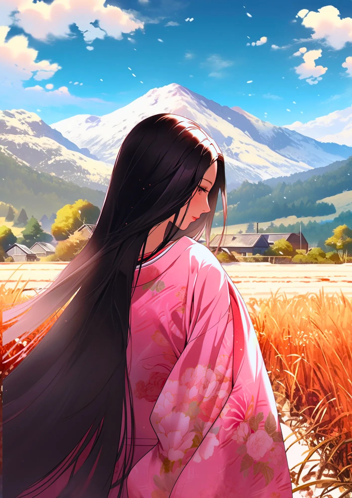
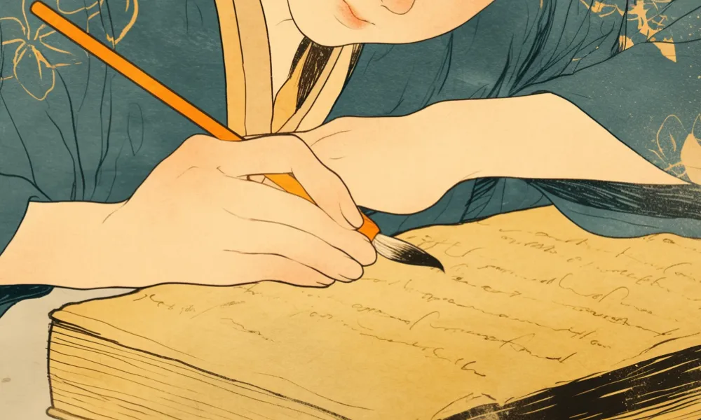

小野小町
謎多き世界三大美女
雪山と田んぼ
小野小町の出身地、秋田の雪山、田んぼ、家々をイメージ。
長髪
平安時代は、サラサラのロングヘアーが美人の条件とされた。
[人物プロフィール]
生没年
不明（9世紀ごろ）
時代
不明（9世紀ごろ）
身分
歌人・芸術家
小町は超美人だったけど、恋愛で悩んでたらしいよ。

 小野小町ってどんなひと？
小野小町ってどんなひと？
平安時代の女流歌人で、その美貌と才能で知られています。「百人一首」にもその歌が選ばれており、恋愛や人生の儚さを詠んだ和歌が有名です。小町は、和歌を通じて平安時代の文化や女性の感情を伝えています。
コラム
（カード右上）花の色は 移りにけりな いたづらに わが身世にふる ながめせしまに
カードの効果解説！
小町集
小町集は、平安時代の女流歌人、小野小町の和歌を集めた歌集です。小野小町は美しい女性として有名で、彼女の和歌は恋愛や自然をテーマにしています。彼女の歌は、当時の貴族たちに広く愛されました。
百夜通い
百夜通いは、平安時代の恋愛習慣で、男性が女性のもとに百夜通い続けることを指します。この習慣は、恋愛の真剣さを示すものとして重要視されました。
弥生時代ってどんな時代？
弥生時代ってこんな時代 ってのをなんとなく。時代かぶってたりしたら関連人物 との繋がりについて纏める感 じで。弥生時代ってこんな時代 ってのをなんとなく。時代かぶってたりしたら関連人物 との繋がりについて纏める感 じで。


クイズ！：小野小町が得意だった芸術はなんでしょう？